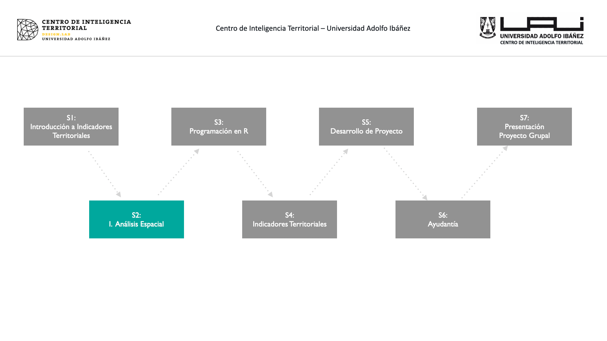
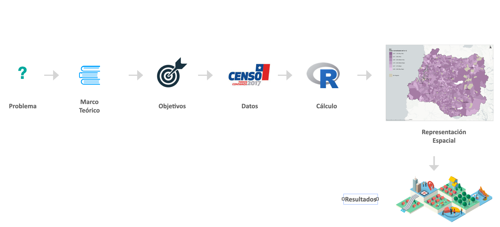
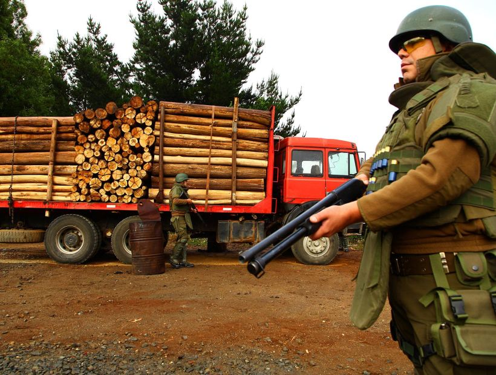
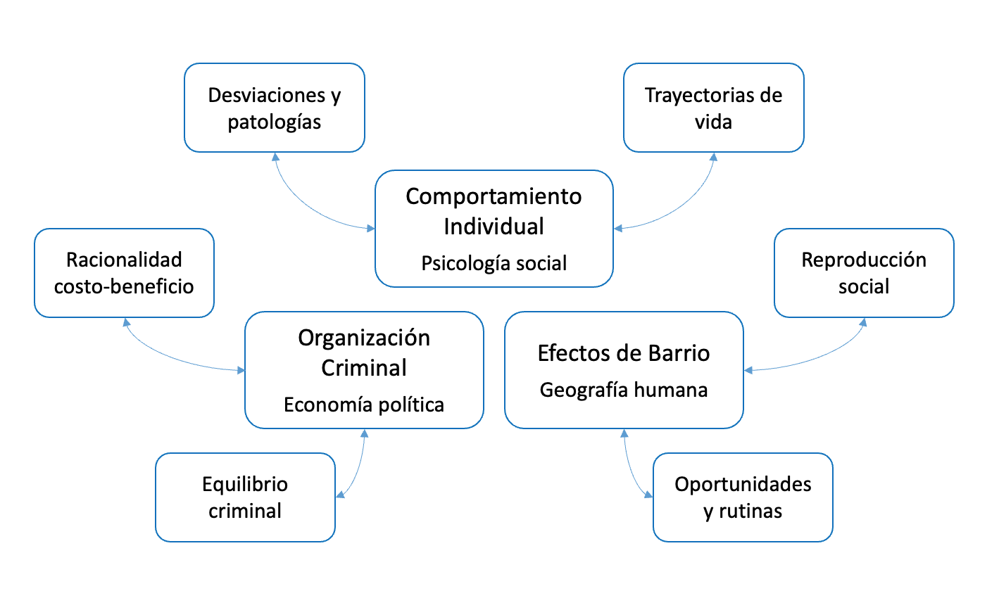
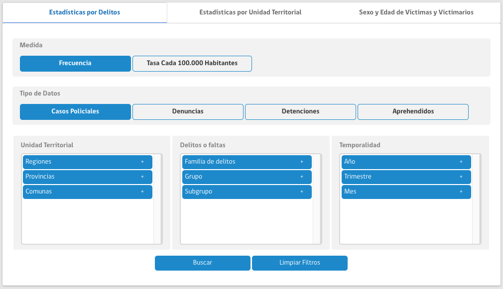
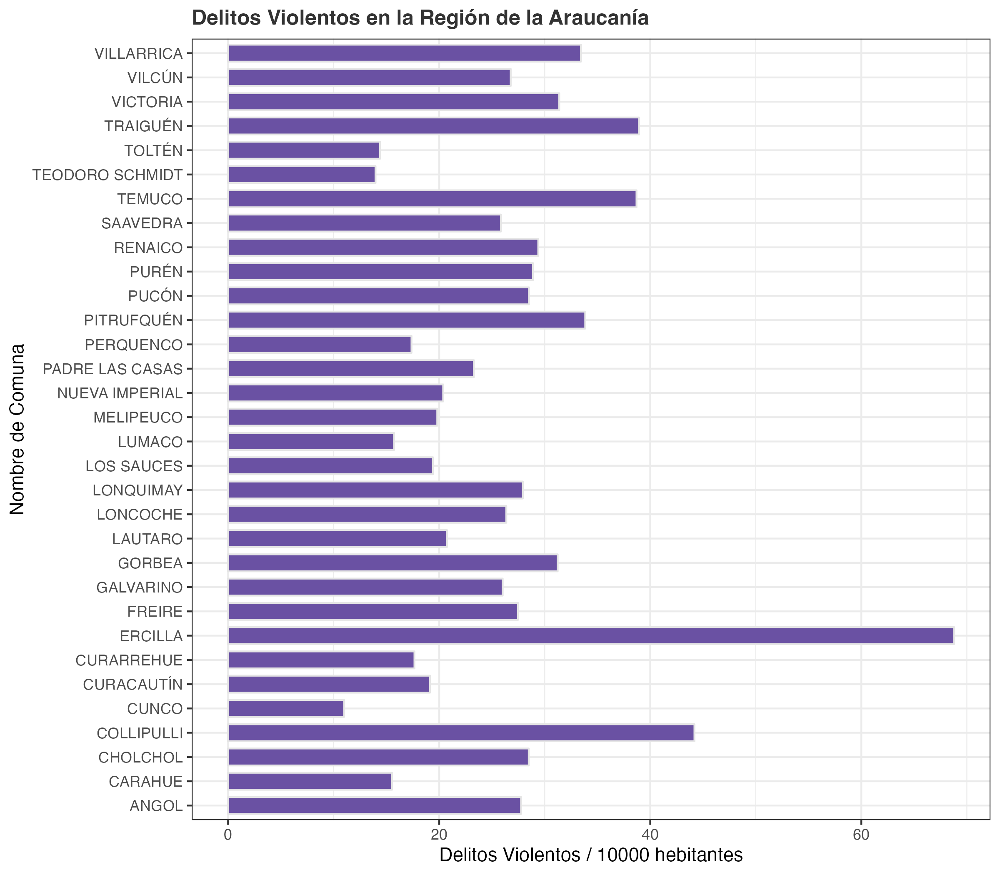
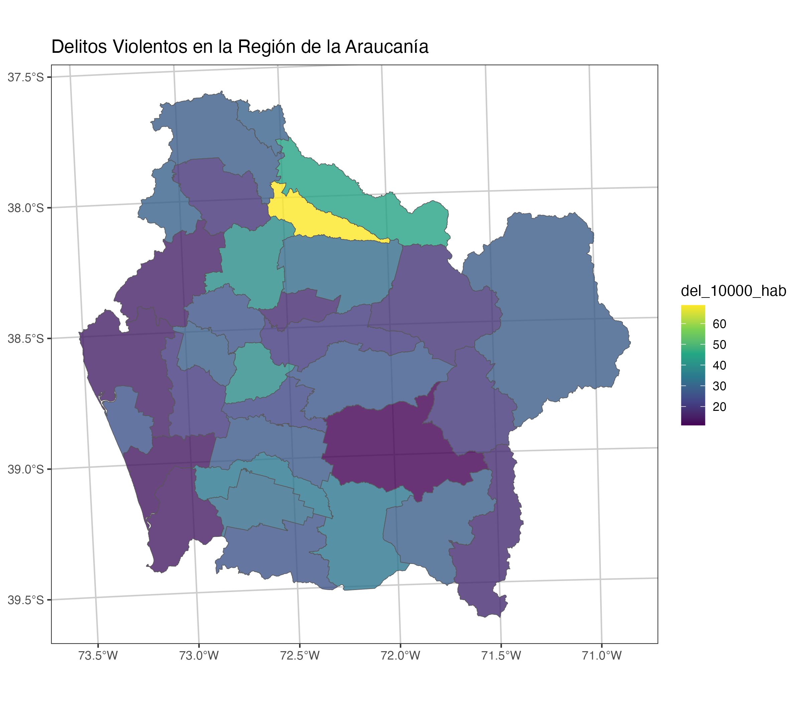

4 Indicadores Territoriales
Parte 1

Etapas para la construcción de indicadores territoriales

4.1 Problema Territorial
En esta etapa se debe explicar claramente el problema específico relacionado con el territorio que se quiere analizar. Esto puede involucrar desafíos sociales, económicos, ambientales, seguridad, o de planificación urbana.
Es importante explicar explicar porque el problema es significativo para la comunidad y cómo los indicadores territoriales pueden ayudar a entenderlo y eventualmente a resolverlo.
Ejemplo Delincuencia Rural

Antecedentes: La delincuencia rural ha ido en aumento en varias regiones del país, afectando la calidad de vida de los habitantes, la economía local y la percepción de seguridad.
Relevancia:
La delincuencia en zonas rurales no solo impacta la seguridad de los residentes, sino que también tiene consecuencias económicas y sociales significativas.
objetivo preliminar:
El objetivo (preliminar) es identificar y analizar los patrones espaciales y temporales de la delincuencia rural en esta región. Esto permitirá comprender mejor dónde ocurren los delitos, identificar factores de riesgo asociados y proponer medidas de mitigación efectivas.
Preguntas Relevantes
- ¿Cuáles son las áreas rurales más afectadas por la delincuencia?
- ¿Qué factores socioeconómicos y geográficos están asociados con mayores niveles de delincuencia?
4.2 Marco de Referencia
Establecer las teorías, conceptos y estudios previos que guiarán el análisis y la construcción de indicadores. El marco teórico proporciona la base conceptual y metodológica para entender el problema y justificar las decisiones tomadas en el proceso de investigación.
Este incluye la revisión de literatura relevante, teorías geográficas, modelos de análisis espacial, y estudios previos que han abordado problemas similares.
Ejemplo Delincuencia Rural

Contextualizar el Problema:
Entender cómo los conceptos y teorías de la desorganización social, actividades cotidianas y lugares críticos aplican a las áreas rurales.
Definir Indicadores:
Basándonos en la literatura y teorías, podemos definir indicadores clave de seguridad rural, como la tasa de delitos por población, la densidad de puntos calientes, y el nivel de cohesión social.
Guiar el Análisis:
Utilizar metodologías probadas para recolectar y analizar datos espaciales y socioeconómicos, asegurando que nuestro enfoque esté alineado con las mejores prácticas en el campo.
4.3 Definición de Objetivos
Proporcionan clarificación de lo que se espera lograr con el estudio y la construcción de indicadores territoriales. Los objetivos proporcionan una guía clara y concisa para todo el proceso de investigación, asegurando que todas las actividades estén alineadas con el propósito del estudio.
Se puede usar el framework de definición de objetivos SMART (Specific, Measurable, Achievable, Relevant, Time-bound) ayudan a estructurar el trabajo de manera que los resultados sean tangibles y evaluables.
Ejemplo Delincuencia Rural
- Recopilar y analizar datos de denuncias policiales.
- Específico: Recolectar datos de delitos.
- Medible: Número de denuncias y encuestas recopiladas y analizadas.
- Alcanzable: Colaboración con autoridades locales y comunidad para obtener los datos.
- Relevante: Proporciona una base de datos sólida para el análisis.
- Temporal: Completar la recolección y análisis en 12 meses.
- Construir un Indicador Comunal de frecuencia de delitos rurales.
- Específico: Indicador de Frecuencia comunal.
- Medible: Todas las comunas deben tener valores y ser mapeados.
- Alcanzable: Mediante en herramientas SIG y acceso a software adecuado.
- Relevante: Ayuda a focalizar recursos y estrategias de intervención.
- Temporal: Completar indicador y su mapeo.
- Evaluar la relación entre factores socioeconómicos y la incidencia de delitos en áreas rurales.
- Específico: Análisis estadístico de la relación entre factores socioeconómicos y delincuencia.
- Medible: Correlaciones y modelos estadísticos desarrollados.
- Alcanzable: Acceso a datos socioeconómicos y uso de software estadístico.
- Relevante: Identifica factores de riesgo asociados a la delincuencia.
- Temporal: Completar la evaluación en x meses.
- Proponer estrategias de intervención basadas en los hallazgos del análisis territorial.
- Específico: Desarrollar recomendaciones para mejorar la seguridad rural.
- Medible: Número de estrategias propuestas y evaluadas.
- Alcanzable: Colaboración con expertos en seguridad y autoridades locales.
- Relevante: Proporciona soluciones prácticas basadas en evidencia.
- Temporal: Completar las propuestas de intervención en x meses.
4.4 Recolección de Datos
Identificación y recopilación de los datos necesarios para calcular los indicadores territoriales. Esta etapa es crucial para asegurar que los datos utilizados sean de alta calidad y adecuados para el análisis.
La recolección de datos implica la identificación de fuentes de datos abiertas y cerradas, así como la evaluación de diversas características que determinan la calidad de los datos. Estas características incluyen representatividad, pertinencia, precisión, actualidad, accesibilidad, y consistencia.
Ejemplo Delincuencia Rural
- Datos del Censo:
- Descripción: Información demográfica y socioeconómica recopilada por el gobierno.
- Característica: Representatividad (cubre toda la población), pertinencia (contiene variables relevantes), y actualidad (generalmente actualizados cada 10 años).
- Datos de Delitos Públicos (SALA CEAD):
- Descripción: Bases de datos de delitos reportados, disponibles a través de portales de transparencia gubernamental.
- Característica: Pertinencia (específicos a la delincuencia), accesibilidad (disponibles públicamente), y consistencia (métodos uniformes de recolección).
Actividad:
Revisar fuente de datos abiertas
Estadisticas Delictuales del Centro de Estudios y Análisis de Delitos - CEAD

Otras fuentes de información nacionales
Censo de Población y Vivienda
- Descripción: El Censo de Población y Vivienda se realiza cada diez años y ofrece un conteo exhaustivo de la población y sus características demográficas, económicas y de vivienda. Es una fuente crítica de datos para la planificación y desarrollo de políticas a nivel nacional y local.
- Enlace: Censo
Encuesta Nacional de Uso del Tiempo (ENUT)
- Descripción: La Encuesta Nacional de Uso del Tiempo (ENUT) proporciona información detallada sobre cómo las personas distribuyen su tiempo en diversas actividades, incluyendo trabajo remunerado, trabajo no remunerado, educación, ocio y cuidados. Es una herramienta clave para analizar la distribución del trabajo y la desigualdad de género en el uso del tiempo.
- Enlace: ENUT
Encuesta de Caracterización Socioeconómica Nacional (CASEN)
- Descripción: La Encuesta de Caracterización Socioeconómica Nacional (CASEN) es la principal fuente de datos sobre las condiciones socioeconómicas de los hogares en Chile. Proporciona información sobre ingresos, educación, salud, vivienda y otras dimensiones del bienestar, siendo fundamental para el diseño y evaluación de políticas públicas.
- Enlace: CASEN
Encuesta de Presupuestos Familiares (EPF)
- Descripción: La Encuesta de Presupuestos Familiares (EPF) proporciona información sobre los ingresos y gastos de los hogares chilenos, permitiendo el análisis de la estructura del consumo y las condiciones de vida de la población.
- Enlace: EPF
Encuesta Nacional de Empleo (ENE)
- Descripción: La Encuesta Nacional de Empleo (ENE) ofrece datos sobre la situación laboral de la población, incluyendo tasas de empleo, desempleo y subempleo, así como características de la fuerza laboral.
- Enlace: ENE
Encuesta de Victimización (ENUSC)
- Descripción: La Encuesta Nacional Urbana de Seguridad Ciudadana (ENUSC) proporciona datos sobre la percepción de seguridad y la prevalencia de delitos en la población urbana de Chile.
- Enlace: ENUSC
Sistema Nacional de Información Municipal (SINIM)
- Descripción: El Sistema Nacional de Información Municipal (SINIM) ofrece información sobre la gestión y desempeño de los municipios en Chile, incluyendo datos financieros, de infraestructura y servicios.
- Enlace: SINIM
Datos.gob
- Descripción: Datos.gob el repositorio de datos abiertos centralizado del Estado. En este portal encontrarás datos y estadísticas del sector público, para distintos fines, como aplicaciones, visualizaciones, investigación, etc.
- Enlace: datos.gob.cl
IDE Chile
- Descripción: La Infraestructura de Datos Geoespaciales de Chile (IDE Chile), dependiente del Ministerio de Bienes Nacionales.
- Enlace: IDE Chile
Estas fuentes de datos proporcionan una base sólida para el análisis de diversas dimensiones del desarrollo en Chile, siendo de gran utilidad para investigadores, planificadores y tomadores de decisiones.
4.5 Cálculo de Indicadores
El cálculo de indicadores territoriales es un proceso fundamental en la geografía y el análisis espacial, ya que permite transformar datos brutos en información específica que describe una condición, situación, actividad o resultado dentro de un área geográfica delimitada. Este proceso es crucial para modelar y entender el comportamiento de las personas en un territorio, ya que los indicadores territoriales sintetizan complejas interacciones espaciales en métricas que pueden ser fácilmente interpretadas y utilizadas en la toma de decisiones.
Este proceso no solo proporciona una visión cuantitativa del territorio, sino que también resalta patrones espaciales que pueden no ser evidentes a simple vista. La importancia de los indicadores territoriales radica en su capacidad para ofrecer una representación concisa y útil de realidades complejas, facilitando la identificación de problemas y oportunidades a nivel local o regional.
Ejemplo Delincuencia

Revisar el capítulo sec-dataframes que contiene el flujo de trabajo para construcción de un indicador territorial de delitos a nivel comuna utilizando R. Que contempla desde la lectura de la base de información (excel de delitos), agregar información de categorías, hacer filtros, resúmenes estadísticos (tablas dinámicas) y finalmente visualizaciones gráficas y espaciales.
4.6 Representación Espacial
La representación espacial es el proceso de visualización de datos geográficos en mapas, gráficos o modelos que permiten comprender la distribución y relación de fenómenos en un territorio. Este paso es crucial en el análisis de indicadores territoriales, ya que transforma datos abstractos en representaciones visuales claras y accesibles, facilitando así la interpretación y comunicación de información compleja.
Una comunicación visual clara y precisa no solo mejora la comprensión de los resultados, sino que también facilita el diagnóstico de situaciones problemáticas y la identificación de oportunidades.
Ejemplo Delincuencia

Revisar el capítulo sec-dataframes que contiene el flujo de trabajo para construcción de un indicador territorial de delitos a nivel comuna utilizando R.
4.7 Análisis de Resultados
La etapa de análisis de resultados en la construcción de indicadores territoriales es crucial, ya que conecta directamente con la definición inicial del problema territorial y los objetivos planteados. Durante este análisis, se examinan los patrones y tendencias revelados por los indicadores para evaluar si se han cumplido los objetivos propuestos y para extraer información relevante sobre el territorio. Este proceso implica no solo la interpretación de los valores numéricos y visuales, sino también la comprensión profunda de las dinámicas espaciales y cómo estas reflejan la realidad del territorio. Al comparar los resultados obtenidos con la situación planteada en el problema, se pueden identificar áreas de alta prioridad, desigualdades territoriales o comportamientos inesperados que requieren una atención particular.
El análisis de resultados proporciona una base sólida para la toma de decisiones informadas. Al evidenciar información relevante sobre el territorio, los responsables de la planificación y gestión pueden proponer soluciones focalizadas y basadas en evidencia. Además, este análisis puede ayudar a explicar y entender fenómenos complejos, permitiendo no solo descartar hipótesis iniciales, sino también crear nuevas que reflejen de manera más precisa la realidad observada.